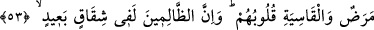

BEN ANCAK
SİZİN İÇİN APAÇIK
BİR UYARICIYIM
49. De ki: Ey insanlar! Ben ancak sizin için apaçık bir uyarıcıyım.
50. Îmân edip sâlih ameller işleyen kimseler için mağfiret ve bol rızık vardır.
51. Âyetlerimiz hakkında (onları tesirsiz kılmak için) birbirlerini geri
bırakırcasına yarışanlara gelince, işte bunlar, cehennemliklerdir.
52. (Ey Muhammed!) Biz, senden önce hiçbir resûl ve nebî göndermedik ki, o, bir
temennide bulunduğunda, şeytan onun dileğine ille de (beşerî arzular) katmaya
kalkışmasın. Ne var ki Allah, şeytanın katacağı şeyi iptal eder. Sonra Allah, kendi
âyetlerini (lafız ve mana bakımından) sağlam olarak yerleştirir. Allah, hakkıyla
bilendir, hüküm ve hikmet sahibidir.
53. (Allah, şeytanın böyle yapmasına müsaade eder ki) kalplerinde hastalık
olanlar ve kalpleri katılaşanlar için, şeytanın kattığı şeyi bir deneme (vesilesi)
yapsın. Zalimler, gerçekten (haktan) oldukça uzak bir ayrılık içindedirler.
54. Bir de, kendilerine ilim verilenler, onun (Kur’an’ın) hakikaten Rabbin
tarafından gelmiş bir gerçek olduğunu bilsinler de ona inansınlar, bu sayede kalpleri